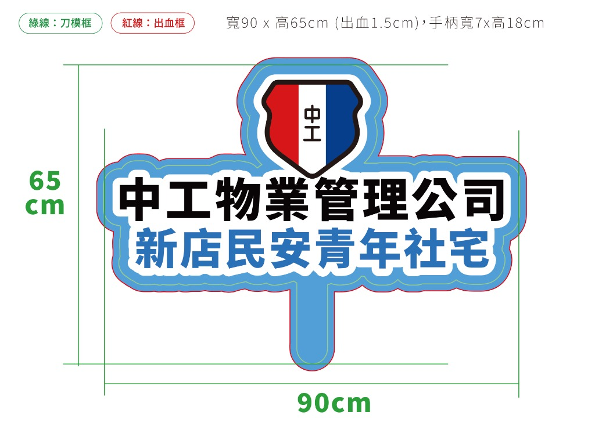
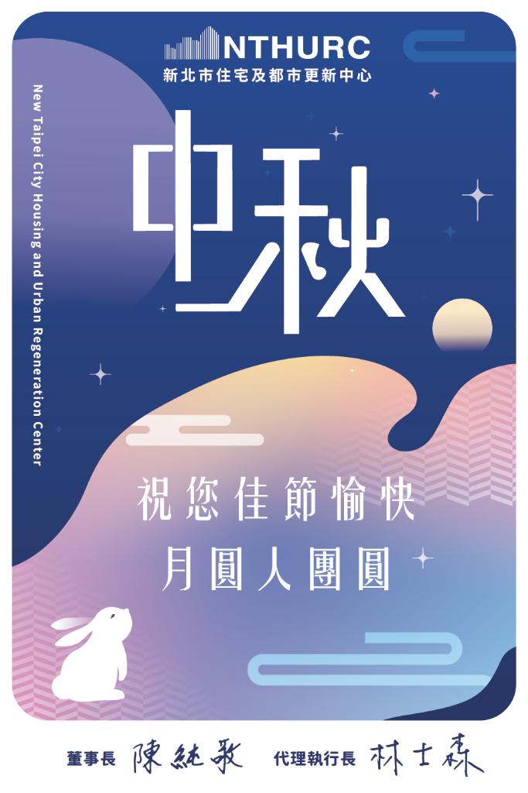
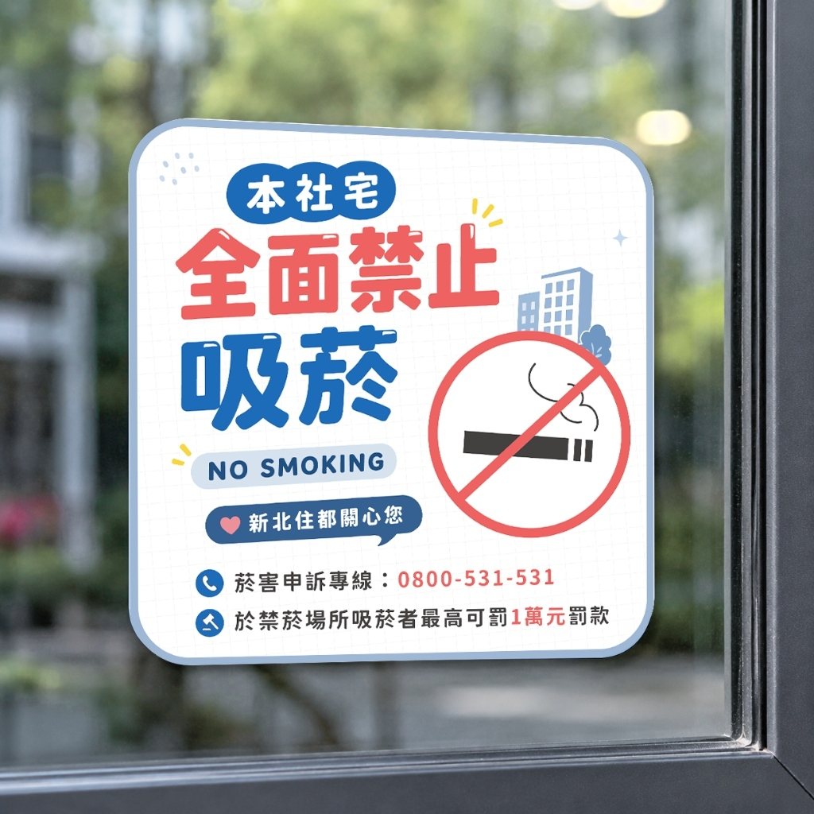

新北住都中心 設計手冊
收錄專案製作SOP、可用授權圖庫等資訊，記得加入書籤、方便隨時查閱
專案類型
Project Types
官網&社群圖文、數位廣告與簡報製作

活動背板、宣傳海報、DM 折頁與手舉牌等輔銷物

活動長影音、短影音製作與腳本發想
工作流程
Workflows設計SOP
需求確認
確認需求來源窗口是誰，記錄製作規格（尺寸、文案內容、交付時程等）
素材準備與發想
聚焦視覺風格，可蒐集素材或參考過往專案，若用圖庫素材，請確認版權使用
初稿製作與核對
提交前可檢查規格與需求是否一致，確認後請先供凱弘核對
修訂與完稿
與需求單位確認成品需求，進行修訂調整
歸檔與交件
留存原始檔並確認版本是否正確，外部資料夾命名為 [日期]_[專案名稱]
常見狀況應對
大原則：遇到不清楚或不知如何處理時，先詢問凱弘或牧羣
可先至本網站「專案類型」中查詢，如果都無類似需求或為特殊規格，可直接詢問凱弘

請先查看「雲端輔銷物庫存表」，確認需拿取的品項名稱、領取數量以及存放位置，登記後再行發放

歡迎主動提出！設計非常需要不同觀點碰撞，無論在排版或內容上有新靈感，都可一起討論
常用書籤與資源庫
Quick Links內部公槽路徑
點擊按鈕直接複製路徑，貼入檔案總管網址列即可開啟專案工作資料夾
專案製作、檔案交付皆在此處。中心設計規範（Logo、Mascot、標準模板）也收錄於此
活動拍攝紀錄
活動照片及影片原始檔存放處。每個活動獨立建置資料夾，取名邏輯為 [日期]_[專案名稱]
常用書籤
解決「那個在哪裡？」的疑問，也歡迎提供覺得該收錄的內容品牌色與字體規範
專案請使用可商用字體。若新增使用字型，請務必確認授權並將字型檔同步上傳至公槽
設計專案總覽
Project Overview都更最前線EP10-4
緊急度：高前期鏡位圖規劃、男主播口白分段生成與後續剪輯
115年度新北優良公寓大廈頒獎典禮－手舉牌
緊急度：低管理單位為中工物業管理公司、獲獎社宅為新店民安青年社宅

115年度社宅第一次抽籤直播素材
緊急度：高將於10/13(二)上午11點辦理，需製作官網、社群及直播用素材
中秋社群圖文
緊急度：低預計排程於9/23(三)發佈於FB、IG、THREAD，須同步上限動
中心球類競賽－影片開頭
緊急度：中用於慶生會播放使用
抵家表情庫製作
緊急度：低擴充角色元件，利於未來中心宣傳
緊急聯絡人
Who to ask凱弘
稿件確認 / 規格疑問 / 輔銷物
牧羣
對外公關 / 企劃內容
首週工作清單
Onboarding Tasks數位廣告規格
包含官網製圖、各社群平台貼文、廣告素材與簡報常用規格
官網製圖
Web Graphics- 製作尺寸：1181*448 px (輸出時選兩倍)
- 圖檔格式：png or jpg
- 色彩與解析度：RGB、72 dpi
- 檔案大小：建議壓縮在 1MB 以下，確保網站載入速度
- 文章縮圖尺寸：798*532 px (建議輸出時選兩倍)
- 內頁圖片尺寸：寬度固定 1200 px，高度依原始照片調整
- 色彩與解析度：RGB、72 dpi
社群圖文
Social Media- 單圖：1500 x 1500 px (方型)、1500 x 1875px (直方型)
- 多圖：1500 x 1500 px (方型)
- 色彩與解析度：RGB、72 dpi
- 單圖&多圖：1500 x 1875px (直方型)
- 色彩與解析度：RGB、72 dpi
- 單頁訊息為 1040 x 700 px (橫方型) 或 1040 x 1300 px (直方型) 或 1040 x 1040 (方型)
- 多頁訊息為 1500 x 1365 px (方型)
- 色彩與解析度：RGB、72 dpi
簡報製作與美化
PPT / Gamma- 製作比例：16:9 (1920 x 1080 px)
- 排版原則：注意圖文對齊，並善用圖表將數據可視化，避免大量文字堆疊
其他廣告
Digital Ads- 新北市政府城鄉發展局：4084 x 1079px
- 新北市政府都市更新處：2696 x 844px
- 色彩與解析度：RGB、72 dpi
實體印刷規範
包含活動背板、海報、手舉牌、小卡等輸出物規格，輸出前請將印刷檔轉外框並確認設計效果是否影響最終製作
海報設計 (Poster)
Poster- A1 (全開)：594 x 841 mm (出血後 600x847mm)
- A2 (對開)：420 x 594 mm (出血後 426x600mm)
- A3 (四開)：297 x 420 mm (出血後 303x426mm)
- A4 (八開)：210 x 297 mm (出血後 216x303mm)
- 色彩與解析度：CMYK 色彩模式，解析度必須達 300 dpi
- 出血設定：四邊各加 3 mm 出血線
手舉牌、各式小卡
Marketing Props- 單人手舉牌：約寬 85 x 65 cm（pvc-4色-霧p-合成版）較醒目
- 名片：90 x 54 mm（四邊出血 1mm）
- 節慶小卡：120 x 80 mm（四邊各留 1mm 出血）、150 x 105 mm（四邊出血 1mm）
DM 折頁
Flyer / Brochure- A4 雙面：210 x 297 mm (四邊出血 3mm)
- A4 三折頁：展開尺寸 297 x 210 mm（內折頁寬度99mm）
活動大型輸出
Large Output- 常見尺寸：寬 300 ~ 600 cm x 高 240 cm（依活動場地丈量尺寸為準）
- 製作比率：檔案過大可採 1:10 縮小製作（300dpi CMYK），並於檔案內標記輸出原尺寸
- 視覺重心：主標與主視覺應放置於離地 120cm 以上之安全高度，避免被貴賓合影時遮擋
影音剪輯與企劃指南
包含長影音、短影音製作與腳本常用規格
長影音 (招商影片 / 活動紀實)
- 畫面比例：16:9 橫式
- 解析度：1920 x 1080 (FHD) 或 4K (3840x2160)
- 幀率：29.97 fps 或 60 fps
- 編碼格式：H.264 (.mp4)，音訊 AAC 立體聲
社群短影音 (Reels / Shorts)
- 畫面比例：9:16 直式 (1080 x 1920 px)
- 黃金前 3 秒：開頭建議直接破題，勾住觀眾
- 介面安全區：字幕與重要內容應避開右側按讚列、底部描述區
腳本與分鏡企劃
- 【格式】：畫面描述 / 運鏡 / 視卡指示/ 旁白口播 / 字幕 / 配樂 說明
- 秒數預估：標註每段預計秒數，方便對位與控制整體秒數
設計專案總覽
右側篩選器可調整檢視方式，點擊卡片縮圖可放大預覽
都更最前線EP10-4
前期鏡位圖規劃、男主播口白分段生成與後續剪輯
115年度新北優良公寓大廈頒獎典禮－手舉牌
管理單位為中工物業管理公司、獲獎社宅為新店民安青年社宅
中秋小卡印製
印製數90張、尺寸12x8cm、再生紙SH30203 216P-單面彩印

禁菸貼紙製作
製作宣導貼紙，並供3款圖面供承辦確認

中心品牌提袋
共製作4款袋型，帆布袋兩款、PP磨砂袋、PVC飲料透明提袋
115年度社宅第一次抽籤直播素材
將於10/13(二)上午11點辦理，需製作官網、社群及直播用素材
中秋社群圖文
預計排程於9/23(三)發佈於FB、IG、THREAD，須同步上限動
中心球類競賽－影片開頭
用於慶生會播放使用
抵家表情庫製作
擴充角色元件，利於未來中心宣傳
盤點2025中心影片數量及類型
盤點範圍不含業務部產出，並於後續取得廠商報價(目前1家)，用於未來中心年度影片製作預算規劃